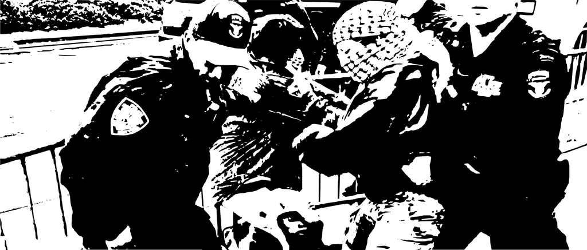
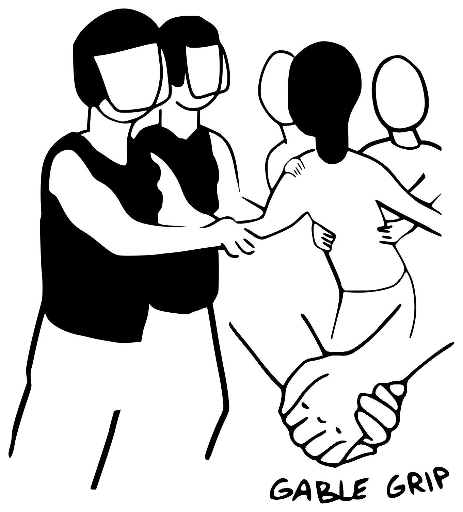
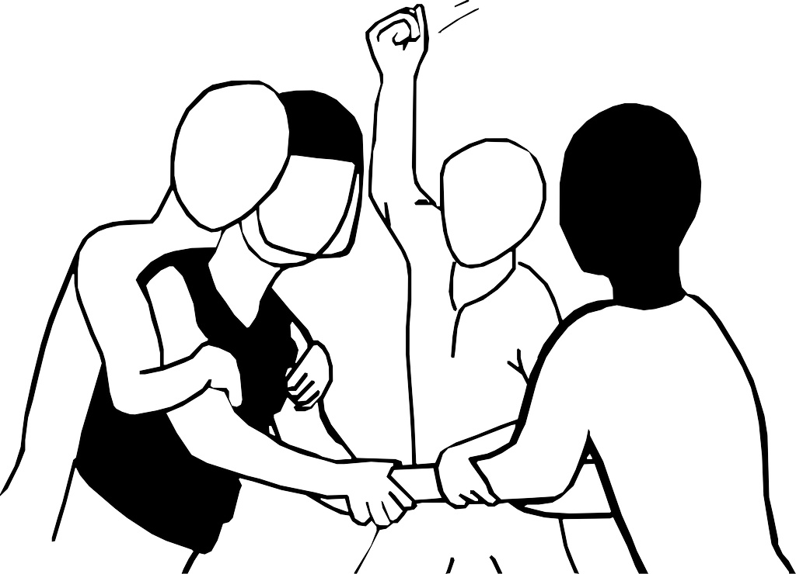
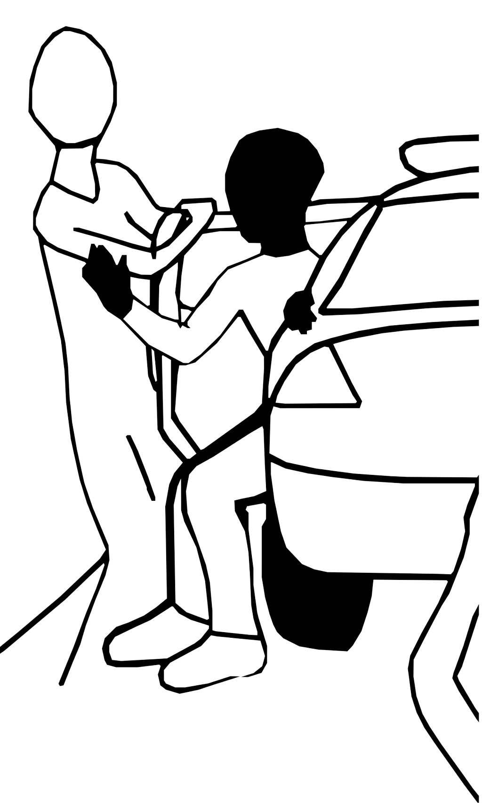
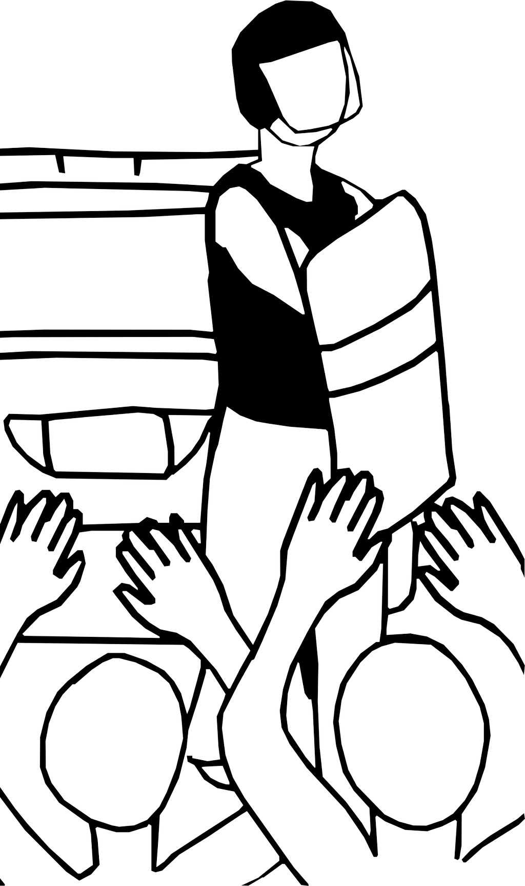
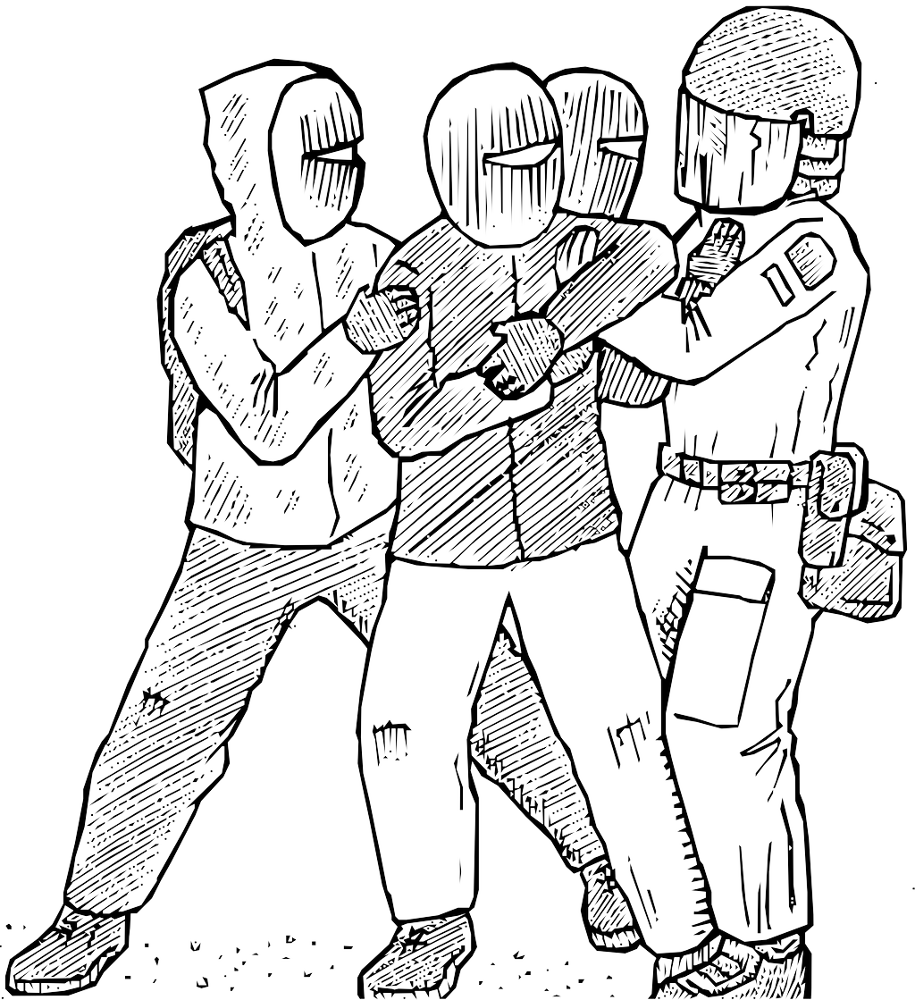

text (md) · PDF: screen · print

A de-arrest, aka an unarrest, is the act of freeing someone who has been seized by Law Enforcement Officers (LEOs). Often its police that repress protests and make arrests, but federal agents, like BORTAC who were deployed in 2020, have done riot control and also have arresting powers. A de-arrest can look like physically removing an arrestee from LEOs' grips, opening the door of a car, or pressuring LEOs to release an arrestee. Being arrested can have drastic negative life altering affects, especially for targeted populations like people who aren't white, Muslims, LGBTQ people, and certain radicals. It follows then that reversing an arrest can be well worth the risks involved.
There are many situations where a de-arrest is worth the risk, but please don't skip the considerations section at the end.

Using a secure grip like the Gable grip that's illustrated above, hug the arrestee and pull them out of danger.
You can also hug a person hugging the arrestee as your grips should be strong enough that your efforts will still combine. Holding the arrestee around the torso or abdomen is preferred to grabbing limbs as limbs are harder to get a grip on and can easily dislocate if two or more people are exerting force of them in opposing directions. It may be tempting to pull on a backpack or article of clothing, but most cloth tears easily and backpacks that aren't secured by copious straps and buckles comes loose with ease.
Of the tactics presented here this takes a medium level of risk. Pulling someone who's being snatched by LEOs away from them is more risky than simply pressuring officers to release the arrestee without physical contact with the arrestee, but it also doesn't require physical contact with officers like the next tactic "tactic 2" does.

Pulling and pushing an officer off of an arrestee and/or breaking their grip on an arrestee.
Often combined with "tactic 1" this tactic is probably the most risky as it requires physical contact with an officer which could lead to assault on an officer charges or escalate the LEO response if the police aren't already fully escalated, which very well may be the case if you're at a protest and officers begin making arrests. But risk is also always contextual and an arrest or even a general pacified attitude can lead to greater harm than not taking the risk and acting decisively when you see repression take place.
Technically speaking for pushing off form you should have a low center of gravity and a wide base and push with explosive power with your head up at all times if possible. You could also try pulling the officer off using a similar hugging technique to tactic 1 this time you can also utilize the leverage of a hip twist. For breaking a grip try striking the grip. All that being said you can see why this can get construed as assault in court. Note that similar effects can be had via tactic 1, but also that tactic 1 easily slips into this tactic of direct contact with officers.

Opening a door to let the arrestee(s) go free.
LEOs will leave their patrol cars or prisoner transport vans unlocked from time to time, even when there's arrestee's sitting in said vehicles. In this case one can simply sneakily or quickly open the door of one of these vehicles and let the arrestees out. Of course this is could be considered a crime, but in terms of risk level it would fall lower in most cases than something like directly putting hands on an officer or someone they're physically arresting.

Pressuring police to release the arrestee(s).
Last, but not least, this tactic can often be done with the lowest level of risk out of all the tactics mentioned here. One basic and pretty effective implementation of this tactic is totally surrounding the officers who have the arrestee or otherwise blocking them and/or their vehicle and chanting "Let them go!" and the like until the LEOs cave to the mounting pressure. As we're writing this a couple instances of such a use of this tactic have come out of the Palestine solidarity campus occupations.
This tactic has also been used with some success via surrounding police stations and uses online pressure campaigns, though this is less wide spread and requires more specific circumstances than having someone release before they're processed at a station or jail.
The benefit of this tactic is that its the police themselves consenting to the unarrest so while they are in some sense being forced to release the arrestee(s) so the dearresters and the ex-arrestee won't have to face escape or assault charges if they are tracked down later. If you don't have a crowd asserting pressure there may be some interference charges that come with blocking a police vehicle that may be more easily handed down for only one or two people blocking a police vehicle, but in many cases these are misdemeanor offenses and catch and release.
All de-arrest tactics, are best done with the backing of a at least a handful of people. Not only does having more people make it easier to overpower the officers' holds if you're physically intervening, but also so that those performing the de-arrest can be de-arrested themselves as trying to pull an arrestee away from LEOs can result in officers grabbing and trying to arrest the people who are performing the dearrest. This also applies to tactic 4 as mentioned previously where a critical mass can be a deterrent and better at blocking a vehicle that contains an arrestee. If you feel you need more people during a de-arrest yelling to fellow protesters for help can break people out of the passive observer role.
Being arrested, jailed, and catching charges are all awful experiences, but many, if not all, protest arrests are catch and release so it's important to think about the consequences of particular kinds of de-arrests. Criminal charges for physically intervening during an arrest range from misdemeanor interference charges to felony escape and assault on an officer charges. In some states "anti-lynching laws" have been used to repress anti-racist activists who attempted dearrests. It is also the case that LEO use of force varies. At the scene of a protest lethal force is often tempered, but on the streets on a "normal day" an officer could easily resort to lethal force with relative impunity if they feel remotely threatened. That being said, a hostile crowd at protest that's shown its willingness to act often makes officers think twice as opposed to a pacified crowd that can be steam-rolled.
Something else to consider is how identifiable you or the person you plan to de-arrest are. Are your faces visible? Are you wearing identifiable clothing? Did the police already take identifying information from the arrestee? Will you be easily tracked down later?
Another thing to take into account is that arrestees can be placed into metal handcuffs or plastic zip-tie handcuffs aka quick-cuffs like Flex Cuffs and Cobra Cuffs. It can be pretty awkward for the arrestee to maneuver and make it home with those in place so consider carrying a handcuff key for conventional metal handcuffs or something less conspicuous like proper wire cutters or a bobby pin for the roller locks for the plastic hand cuffs.
All in all de-arresting can be an important part of ones direct action tool kit. Neglected here is how to de-arrest yourself, a future draft may include such a tactic, but at this point it would get too into the weed with grappling and this guide for our purposes. On the ground it could be suggested to try and get your hips free and work to your knees then leaning into the officer try and work to a standing position with your hands attempting to control their hands or breaking their grip if they've bear hugged you. As you can see without illustrations it can get pretty complicated pretty fast. Consider taking a couple months of grappling classes or setting up more targeted grappling games with your comrades. If you have the chops for it there's instances of one person backed by a couple friends pull comrade after comrade away from the police lines with minimal wrestling experience.
Also worth noting that if you do get arrested for attempting or successfully performing a de-arrest there is a chance you can pull off a "defense of others" defense which basically entails you prove the arrest and use of force used by the officer(s) was "unlawful" which has worked before, but as you may know the legal system is heavily weighted in favor of the police.
Lastly, it was briefly mentioned before, but even just bolstering a conflictual disposition towards repressive forces and encouraging decisive action are a worthy goal even without the added benefit of helping free someone. There's plenty of excellent reasons to break the spell of self-policing and risk charges in order to fight back, especially when that antagonism can spread and shape the general disposition of a given movement for the better or even explode a situation into a deeper more affective rupture.
